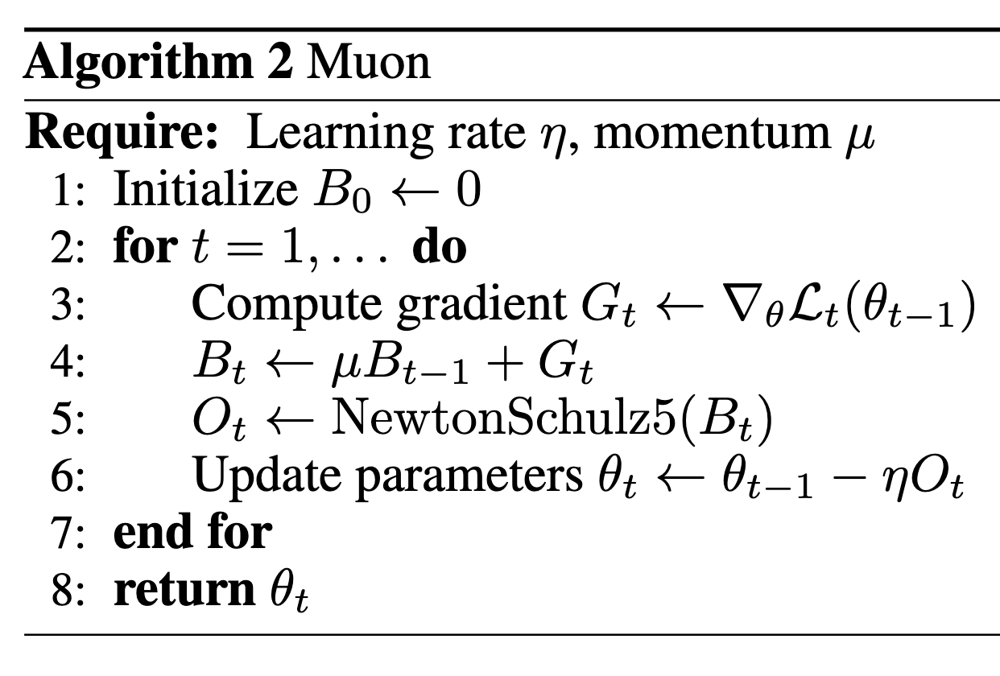

Muon优化器
近日，Moonshot开源了改进版 Muon 优化算法及用 Muon 训练的SOTA级的MoE小模型。开启了Muon在大模型应用的局面。也许新的优化器时代即将到来！
PS：像谷歌23年提出的Lion（EvoLved Sign Momentum）优化器也号称比AdamW好，但是缺乏在大模型上的成功实验，大多数人还是选择Adam/AdamW。
苏神和官方作者Keller Jordan都写了一些博客来介绍这个内容。
初步介绍

其中NewtonSchulz5被定义为
1 | |
Muon取得了以下经验结果。
- 研究者将训练速度记录提高到在 CIFAR-10 上达到 94%准确率的 2.6 A100-秒，从 3.3 秒提升。
- 将训练速度记录提升至 FineWeb（一个被称为 NanoGPT 速度跑的竞争性任务）上的 3.28 验证损失，提高了 1.35 倍。
- 持续在扩展到 774M 和 1.5B 参数时展示训练速度提升。
- 训练了一个 1.5B 参数的 Transformer，在 HellaSwag 上达到 GPT-2 XL 级别的性能，耗时 10 个 8xH100 小时。使用 AdamW 达到相同结果需要 13.3 小时。
为何选择NewtonSchulz5
正交化矩阵有好几种方法，但并不好用或会出现问题。
（1）SVD
易于理解，但太慢了。
（2）耦合牛顿迭代（Coupled Newton iteration）
Shampoo中用于执行逆四次方根，并且可以轻松地适应进行正交化。
但它在至少 float32 精度下运行以避免数值不稳定性，这使得它在现代 GPU 上运行缓慢。
（3）NewtonSchulz5
可以在bfloat16 中稳定运行
NewtonSchulz5介绍
该算法和msign（矩阵符号函数）有关。
它也与SVD有关。
$$
U, \Sigma, V^{\top}=S V D ( M ) \quad\Rightarrow\quad\mathrm{m s i g n} ( M )=U_{[ : ,: r ]} V_{[ :, : r ]}^{\top}
$$

参考资料
Muon优化器
https://lijianxiong.work/2025/20250224/